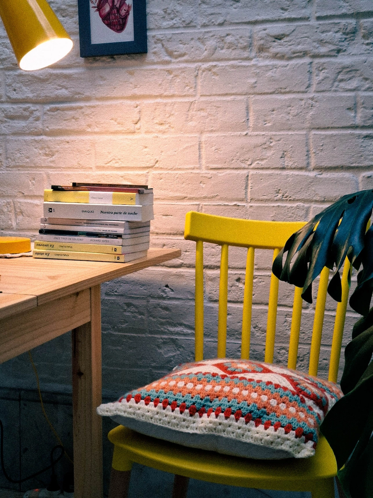

Bienvenidas a Espacio Alud
Espacio ALUD nació de una pregunta sencilla: ¿qué pasa cuando las mujeres nos juntamos sin apuro,
con un libro o un ovillo en la mano, y nos damos permiso para estar presentes?
Vivimos en un tiempo que nos pide velocidad y producción constante. ALUD es la grieta por donde se
cuela lo otro: la lentitud, la creatividad, el encuentro real. Un lugar donde hacer comunidad no es
una palabra de moda sino una práctica concreta, semanal, de a poco.
Acá vas a encontrar el Club de Lectoras, el Taller de Crochet y una newsletter para acompañar tus
procesos creativos. Todo pensado para mujeres que saben que necesitan un espacio propio, aunque
todavía no sepan exactamente cómo nombrarlo.


Soy Lucía, docente, facilitadora y tejedora de guaridas creativas.
Acompaño a mujeres a encontrar un espacio propio donde detenerse, crear y conectar con otras.
Mi trayectoria comenzó en la academia, pero desde hace algunos años me empezó a ocupar más aquello
que ocurría en los márgenes, cuando compartimos un libro, un mate o un encuentro, y de repente,
estamos asistiendo al tejido mismo de la vida.
Creo que reunirse a escribir, leer, tejer con otras es, también, una forma de resistencia.